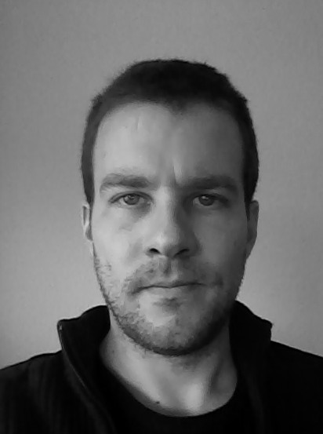

<div style="display:none">1</div>
<h1>Introduction</h1>
<div style="float:left;text-align:justify;display:inline;max-width:600px;">
I am a post-doctoral researcher at the <a id="simple" href="http://www.uni-marburg.de/fb09/dsa/">Forschungszentrum Deutscher Sprachatlas</a> 
of <a id="simple" href="http://www.uni-marburg.de/">Philipps-University Marburg</a>.  
Having worked as a reasearch assistant at <a id="simple" href="http://www.uni-duesseldorf.de">Heinrich Heine University Düsseldorf</a> 
in the project <a id="simple" href="http://www.evoclass.de">"Classification and Evolution in Biology, 
Linguistics and the History of Science (EvoClass)"</a>, I now carry 
on my work in quantitative historical linguistics in the research project <a id="simple" href="http://quanthistling.info">"Quantitative 
modeling of historical-comparative linguistics"</a>.
In this project, we try to improve traditional historical linguistics by focusing on the 
“quantitative“ aspects of language comparison.
My own work covers the development of computational methods for automatic sequence analyses in 
historical linguistics, and the application of biological methods in quantitative historical 
linguistics.</div>

</table>


